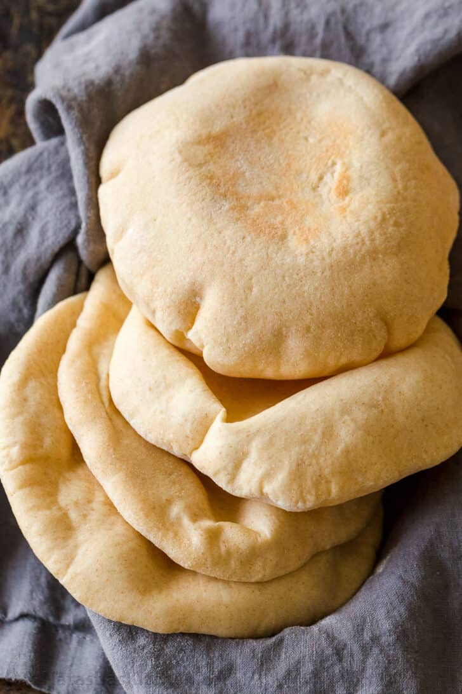

Pita Bread

Description
This delicious pita recipe makes 8 fluffy pita breads with pockets, perfect for stuffing with salad, or just ripping pieces off to dip in hummus.
Ingredients
- 1 cup warm water
- 2.25 tsp instant yeast
- 0.5 tsp sugar
- 0.25 cup whole wheat flour
- 2 tbsp extra virgin olive oil
- 2.5 cups all purpose flour
- 1.5 tsp fine sea salt
Steps
How to Make the Dough
- In a large mixing bowl, combine warm water, sugar, yeast, and 1/4 cup whole wheat flour. Whisk to combine then set aside for 15 minutes until puffy and foamy on top.
- Add olive oil, 2 1/2 cups flour and salt and stir together with a wooden spoon until shaggy.
- Turn out onto a clean smooth surface and knead vigorously for 5 minutes. The dough should feel sticky to your hands but will get less sticky as you knead and should not be sticking to the counter. If the dough is too sticky to knead, sprinkle with a little more flour and continue kneading. Dough should be soft and tacky to the touch.
- Wash and dry the mixing bowl and grease the inside of the bowl with 1 tsp olive oil inside the bowl. Add dough and turn to coat in oil. Cover the bowl tightly with plastic wrap and place in a warm (100˚F) place for 45 minutes, or at room temperature about 90 minutes until doubled in volume.
- If Baking Pita: Once dough has doubled, preheat oven to 500˚F with a baking stone or baking sheet on the bottom rack position. You need to let the stone heat up for at least 20 minutes or the pita won’t puff properly
How to Form the Pita
- Punch dough down and Transfer dough to a clean surface and divide into 8 even pieces. Cup your hand around each dough ball and roll until you no longer see a dimple or seam underneath. Cover balls with a damp kitchen towel and rest 15 minutes for gluten to relax and make it easier to roll them out.
- Place a dough ball onto a surface generously dusted and press gently into a disk with your fingertips to disperse bubbles. Roll dough balls to 7” wide and less than 1/4” thick. Move the disk several times while rolling to ensure it doesn’t stick to the counter. Keep rolled disks covered with a damp towel so they don’t dry out. Do not stack pitas. Let disks rest 10 minutes before baking and they will puff better.
To Bake Pita
- Place 2-3 pieces of dough on the preheated pizza stone and bake at 500˚F 2 to 2 1/2 minutes or until puffed. Remove from oven and transfer to a rack for 5 minutes then cover with a dry towel to keep the pitas from drying out.
Home